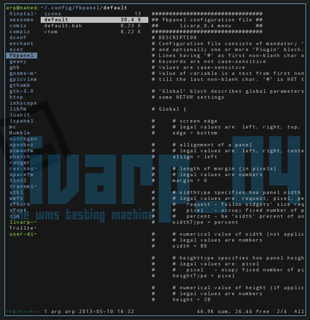
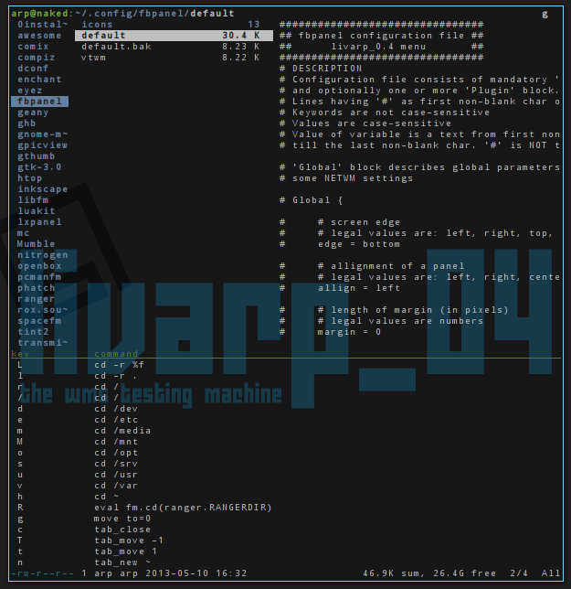
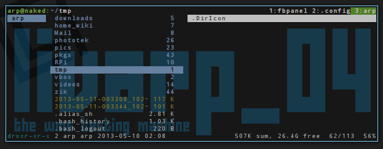

lang fr|gb

ranger: python-cli file-manager
ranger is a file browser written in python adopting vim keyboard shortcuts. very light, it is nonetheless highly configurable: shortcuts definitions, applications associated with file types, use of external scripts ...
ranger uses vim keyboard and mc too:
ranger uses vim for actions and navigation as well as directional arrows.
yy copy
pp paste
dd cut
/ find
n find next
….
ranger provides an organization with columns to visualize the folder tree but also text files directly.
ranger provides direct help in the console client: start typing a keybind, ranger shows you available keybind starting with your first letter: here starting with 'g'
ranger supports bookmarks: go to a dirctory, then type 'm', ranger asks you to type a second letter: it will become the bookmark identifier. you just have to type " ' " then your id-letter to acces to configured bookmarks.
ranger provides tabs: open a tab with "gn" (gonew) , navigate through tabs with " g'n' " or [Tab]
ranger complete configuration is placed in your ~/.config/ranger/ . there you can define shortcuts, panel tree view, sort, file type associations ...